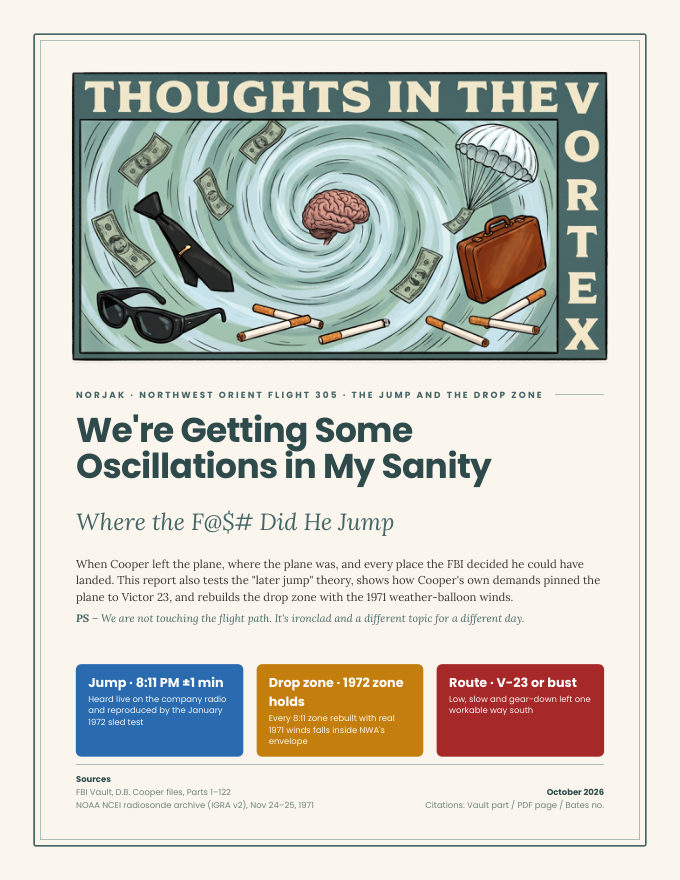
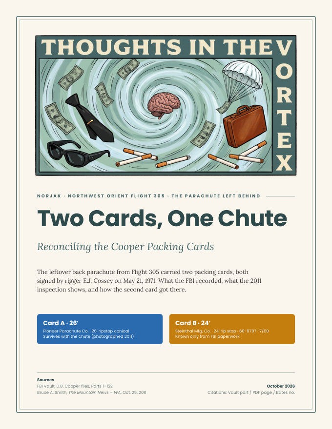

Long-form write-ups on Northwest Orient Flight 305, the D.B. Cooper hijacking of November 24, 1971. Every claim is tied to the FBI's own pages, cited as Vault part / PDF page / Bates number, so you can check it yourself.

We're Getting Some Oscillations in My Sanity
Where the F@$# Did He Jump
When Cooper left the plane, where the plane was, and every place the FBI decided he could have landed. The report also tests the "later jump" theory, shows how Cooper's own demands pinned the plane to Victor 23, and rebuilds the drop zone with the 1971 weather-balloon winds.
We're Getting Some Oscillations in My Sanity
Where the F@$# Did He Jump

Two Cards, One Chute
Reconciling the Cooper Packing Cards
Flight 305 Timeline Wheel
The hijacking minute by minute, from the ticket counter in Portland to the FBI's first look inside the empty cabin at Reno: 246 entries, each with the FBI page it comes from.
Everything here comes from the FBI's own NORJAK file as released on the FBI Vault, plus clearly marked outside sources. A citation like 110 / 267 / 566 means Vault Part 110, PDF page 267, Bates stamp DB Cooper-566, so you can open the page and read it yourself.
Each report comes with its sources: the Oscillations report has a companion PDF reproducing every FBI page it cites, with a header on each page naming the sections that use it.